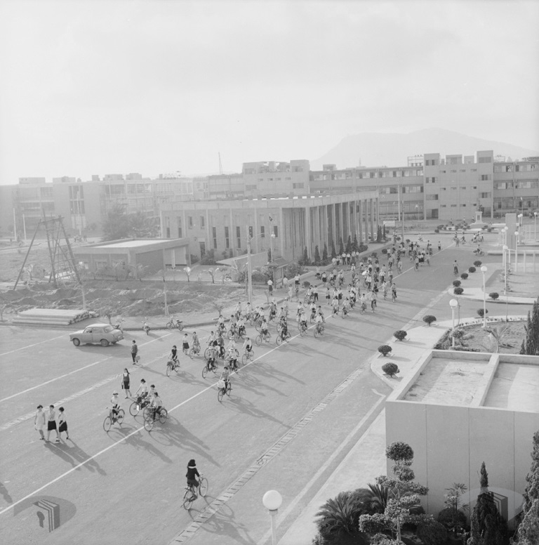
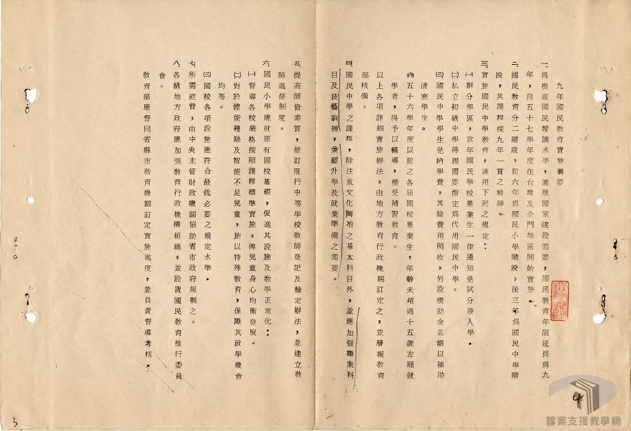

技職教育史哲
戰後臺灣的
技職教育發展（二）
1966–1987
報告學生：廖常智 等三人
授課教師：劉曉芬 老師｜2026.11.18
研究問題
1970 年代的國中畢業選擇
如果學費、通勤距離或繼續升學的機會改變，你會改選嗎？
國家檔案：九年國教實施綱要 · 教育部部史
研究問題
國際局勢與技職制度：點一個事件
國際
臺灣
1966 人力計畫1968 九年國教1969 沙鹿建教
1973 3：7 目標1974 臺灣工業技術學院1987 解嚴
國際事件點上方任一事件
中介：機構／文件—
教育安排—
實線＝有文件可核對；虛線＝尚待證明的推論。
劉曉芬（2007）第二章、第三章第二節 · 教育部部史 · 國際外交檔案
人力規劃與學制
美援轉型與出口工業
美援時期職校設備、師資培育與技術協助
1965美國對臺經濟援助終止
1966高雄加工出口區成立
從園區照片想像：工廠需要哪些技能？

1968｜高雄加工出口區內外景行政院新聞局；國發會檔案管理局藏｜A325000000E/0057/0015/1
檔案管理局：高雄加工出口區 · 國史館美援研究 · 課堂講義
人力規劃與學制
從需求推估到學校配置
估需求產業需要哪些技能？
→
排名額規劃招生規模與類科
→
備資源安排課程、師資與設備
史丹福研究所的教育與人力研究提供規劃參考。
如果預測落空，要看招生、畢業流向，還是企業實際缺工？
國發會人力計畫 · 林大森（2023） · 林凱衡（2022）
人力規劃與學制
誰在估算人力需求：經建部門與技術官僚
1948｜美援會中美經濟援助協定
美方共同負責
→
1963｜經合會下設
人力資源發展小組
→
1973｜經設會加強經濟設計
與研究工作
→
1977｜經建會統籌經濟建設
人力規劃延續
1962 年美援會邀史丹福大學顧問團訪台：建議加強中級人力、中等教育與專科學校。
親美技術官僚多為工程師出身，也包括赴美受訓的官員，成為美國影響力的媒介。
人力需求由誰界定？先看是哪個機構、哪一批人在估算。
劉曉芬（2007）第三章第二節，頁 105–108 · 表 3-9
人力規劃與學制
九年國教與分流的位置：切換前後

1967｜九年國民教育實施綱要國發會檔案管理局藏｜A313000000G/0056/11992-151017/00001
國家檔案：九年國教實施綱要 · 教育部部史 · 簡圖，各校停辦與轉型時間另查
人力規劃與學制
六比四到三比七
1966｜第一期高中 6高職 4
高中：高職 朝 6：4 調整
1968｜第二期4高職＋五專 6
61 學年度 5：5 → 66 學年度 4：6
1973｜第四期人力計畫3高職＋五專 7
十年內轉為 3：7；第七期經建計畫延續
以上為規劃目標。比較比例前，先確認是否納入五專。
3：7 的出處：劉曉芬記 1973 年李國鼎主導第四期人力計畫提出；林大森轉引第七期經建計畫。
誰界定人力需求？計畫怎麼描述學生？
國發會人力計畫 · 林大森（2023） · 劉曉芬（2007）第三章第二節，頁 108
人力規劃與學制
高中與高職全體在學人數
1986 學年度，高職占兩類全體在學人數的 68.6%。
單位：萬人｜選定學年度｜高中、高職全體在學，未含五專教育部《教育統計》100 年版
人力規劃與學制
兩個百分比的分母：切換口徑
68.6%
兩組均為 75 學年度（1986 年起）。一年級口徑排除高中補校、高職補校、實用技能班。教育部統計 · 林大森（2023）
企業、學校與升學
私立高職與家庭選擇
61.2%
75 學年度私立高職生占全體高職生
268,179 ／ 437,924
公立／私立與高中／高職，是兩個分流維度。
林大森的跨世代回溯研究呈現家庭背景與分流的關聯。學費、地點與設備仍需另外查證。
教育部統計 · 林大森家庭背景研究
企業、學校與升學
私立高職撐起擴張：拖動年份
學年度1968
60 / 751968→1987 高職新增 75 校，其中 60 校是私立。
劉曉芬（2007）表 3-10，資料出自教育部（2006） · 單位：校；校數不等於學生數
企業、學校與升學
輪調式建教合作
學生在兩個場域輪調，課程與工時依各案規定。
林凱衡（2022） · 行政院公報
企業、學校與升學
外交變動如何接到課程：西德與美國兩條線
西德1960 年代末Wissing（費新）
經援助計畫來台考察
→
1970門人 Fleckenstein
引進階梯式教學
→
其後促成輪調式
建教合作發展
→
1972西德與中共建交
停止援助與師資訓練
美國Maley群集課程
（馬里蘭方案）
→
師大工教系多位教授
推廣
→
1977經建會人力發展
專案計畫：實驗
→
1983 → 1986課程改革主軸
→ 全面推動
外交事件要接到課程，中間要有援助計畫、專家與師資訓練這些中介。
劉曉芬（2007），頁 111–112（引王自和，1982；劉曉芬、劉萬寶，2003；方俊育，2000）
企業、學校與升學
企業訓練由誰出資
職業訓練金共同分擔訓練成本
大、中小企業需求不同
私人興學企業以辦學參與
建教合作學校與工廠分工訓練
如果員工受訓後轉職，誰出錢、誰決定內容、誰取得收益？
林凱衡（2022）
企業、學校與升學
技職升學的銜接：點一個起點
點「國中」「高職」或「五專」，看當時可以往哪裡走。
林大森（2023） · 臺科大校史 · 劉曉芬（2007）註 16 · 歷史簡圖，各路徑均需經招生
企業、學校與升學
升學管道與實作能力
有升學管道之後，還要看名額、報考資格與學生可負擔的條件。
特定工種訓練著重專門技能
群集課程著重相關職業共用的基礎
訪談中的電機畢業生進廠後仍須熟悉設備與流程。這是個人經驗。
林大森（2023） · 臺科大校史 · 《沈淪中的高職？》訪談
史料判讀
休息
10:00
回場後看 1976 年高雄高工塑膠加工科建教合作案。
國家檔案：高雄高工建教案
史料判讀
高雄高工塑膠加工科建教案：放大原件
點右側按鈕放大原件段落。直書，由右往左讀。
1976｜退輔會塑膠工廠 × 高雄高工合辦輪調式建教合作班實施辦法｜國發會檔案管理局藏 A331340000G/0065/0811/2374｜
國家檔案史料判讀
小組判讀建教合作原案
5 分鐘讀原案附表，找出一項校內科目、一項工廠訓練與一項結業條件。
3 分鐘和同組交換，圈出一項可能跨公司使用的技能。
最後寫下一個文件回答不了的問題。
08:00
國家檔案：高雄高工建教案
史料判讀
從合約到實際學習：把卡片分兩欄
文件明定契約條文可以直接證明
仍需追蹤要靠其他史料才能回答
林凱衡（2022） · 國家檔案：高雄高工建教案
國際背景與政策調整
石油危機與工業人力
1973第一次石油危機
→
臺灣產業規劃既有重化工業與基礎建設
面對經濟變動
→
技能需求營建、設備操作與維修
可對照十大建設與六年經建計畫，思考營建、設備操作與維修的需求。
科別或名額如何改變，仍要查招生與教育計畫。
國發會人力計畫 · 林大森（2023） · 檔案管理局產業史料
國際背景與政策調整
延教班與國中畢業後的選擇
國中畢業尋找就業技能學習機會
→
1983 年試辦延教班高職提供新的學習途徑
→
進入課程以就業技能為重
建教合作回答「學校與工廠如何分工訓練？」
國教院大事紀 · 國家檔案：高雄高工建教案
國際背景與政策調整
外交變局與跨國技術合作
國際1971聯大中國代表權變動
1972上海公報、日中建交
1979美中建交、臺灣關係法
臺灣1976工研院與 RCA 簽約，首批 19 人赴美
1980新竹科學工業園區成立
要追查外交變動與高職名額的關聯，需查教育政策文件。RCA 案屬研發與產業培訓。
聯合國、美日外交文件、工研院 RCA 典藏
國際背景與政策調整
美援結束之後：依賴如何「內化」
三環貿易市場依賴美國
生產依賴日本
臺灣加工出口
65% → 91%赴美研習占出國研習人數
1951–65 美援 → 1966–72 中美基金會
三階段美援引進技術 → 自籌經費延續
→ 私人企業外資與技術合作
技職擴張與經濟成長同步，不等於前者造成後者。
Woo（1991）指出缺乏直接證據；黃毅志（2000）認為教育擴充是經濟發展的結果，代表的是文化資本。
劉曉芬（2007），頁 105、110–113
國際背景與政策調整
1986 年人力規劃的調整
政策目標高中：高職加五專 3：7
→
人力推估預測供需，1986 年建議
酌增高中人數
→
實際觀察在學人數、畢業去向、
缺工與轉職
人力計畫建議據林大森轉引。判斷是否培育過量，需要追蹤不同類科的就業結果。
國發會人力計畫 · 林大森（2023）
國際背景與政策調整
1987 年解嚴與制度延續
1986解嚴前已有
增加高中容量的建議
→
1987臺灣地區解嚴
政治分期界線
→
1988第六次全國教育會議
下一單元
歷史制度論的提問：哪些既有名額、資源與進路會持續？何種證據能證明轉折？
林大森（2023） · 國家檔案：解嚴 · 劉曉芬第二章
國際背景與政策調整
技職政策的四項評估
效益誰負擔設備、
師傅時間及學費？
關聯技能能否用在
不同工作？
公平誰能取得資源及
負擔得起的選項？
多元途徑學生還能轉軌
或進修嗎？
蕭今、黎萬紅（2000）摘要 · 課堂講義 · 林崇熙（1997）
政策討論
1986 年，如果你是決策者
掃 QR code 投票｜只能先推一項，你選哪一個？順手寫一句理由。
教育部統計、林大森（2023）、高雄高工建教案
收束與閱讀
兩分鐘回顧：從人力計畫到課程
收束與閱讀
國際條件如何接回教育制度
歷史─結構美援、出口與人力計畫
追查資金和技術的流向
制度論九年國教、招生與建教
追查資源分配與進路
批判論述分析誰定義人力需求？
哪些學生的選擇未被計入？
有文件可核對的連結 尚待證明的推論
回到開場投票：你當初選的那條路，現在想法有沒有改變？請一位自願分享。
劉曉芬（2007）第二章、第三章第二節及本課史料
收束與閱讀
核心資料與延伸閱讀
- 劉曉芬（2007），《歷史、結構與教育：技職教育變革的探討》，第二章〈歷史─結構研究途徑及其理論〉，頁 23–78；第三章第二節〈威權統治之計畫性經濟階段（1966–1987）〉，頁 104–115。
- 教育部《教育統計》100 年版；66–93 學年度一年級學生結構表八。
- 檔案管理局：〈九年國民教育實施綱要〉及高雄高工輪調式建教案。
- 林大森（2023）、林凱衡（2022）、工研院 RCA 合約典藏、聯合國及美日外交文件。
完整書目與網址見講者備註（按 S 開啟）